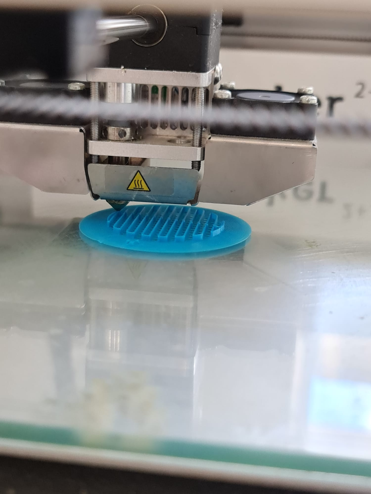

3D Printing
What I did
In this lesson, we printed out the chesspiece I made in Fusion360. The piece can be found here. I exported the chesspiece into an stl file and then used a software called Cura to prepare it for 3D printing.

Before 3D printing, we need to determine the infill size, wall thickness, whether or not we wanted a raft and supports. As I already had experiences with a 3D printer and knew the basics of what was taught, I filled in the values and sliced the model in Cura. The estimated time for printing the model was about 45 minutes and so I saved it as a gcode file into an SD card. The SD card is then inserted into the 3D printer where the printer will recognise the files inside the card and I could select the file I wanted to print. However, I had spent a lot of time trying to save the file into the SD card as this was my first time having to use an SD card reader as my laptop did not have it. Eventually, I was able to start printing my chesspiece.

The 3D printer starting to print out the raft for the piece.
The printer halfway done with the printing.
The printer almost done with the printing.
The final product.
As you can see, the wall of the chesspiece's base is missing, this is due to me making the wall of it too thin and the printer was unable to print out the wall. I had also learnt that supports are very hard to pull out without damaging the piece, this can be seen at the base of the chesspiece too where it is cut down shorter than it should be.